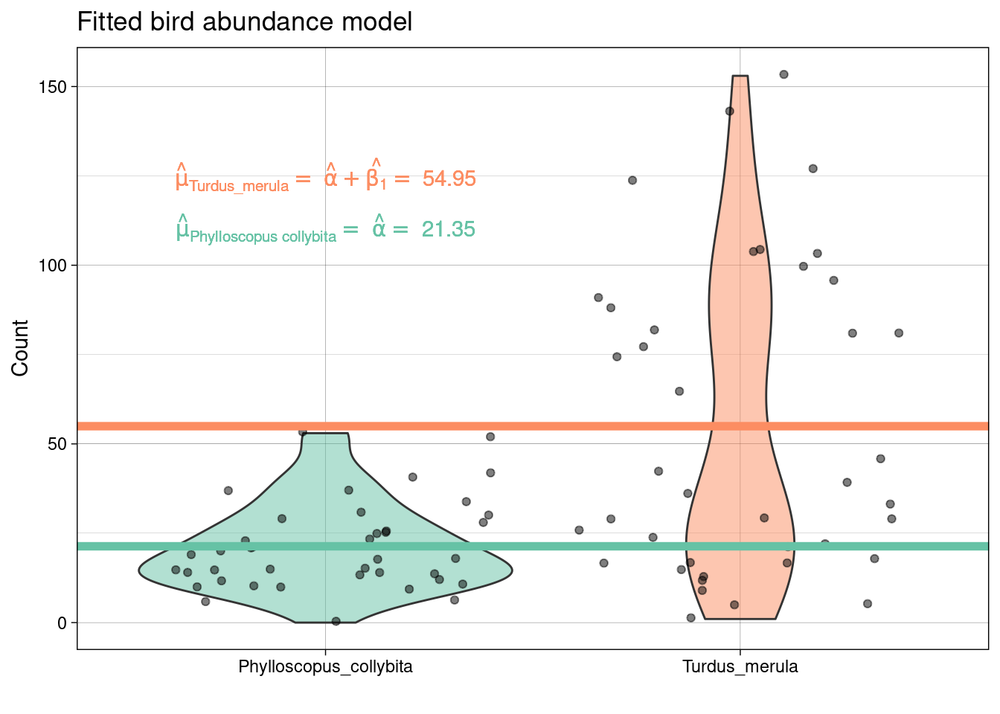
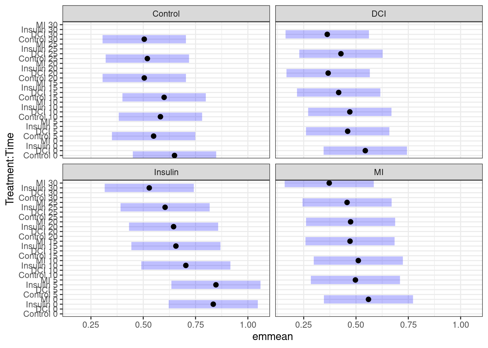
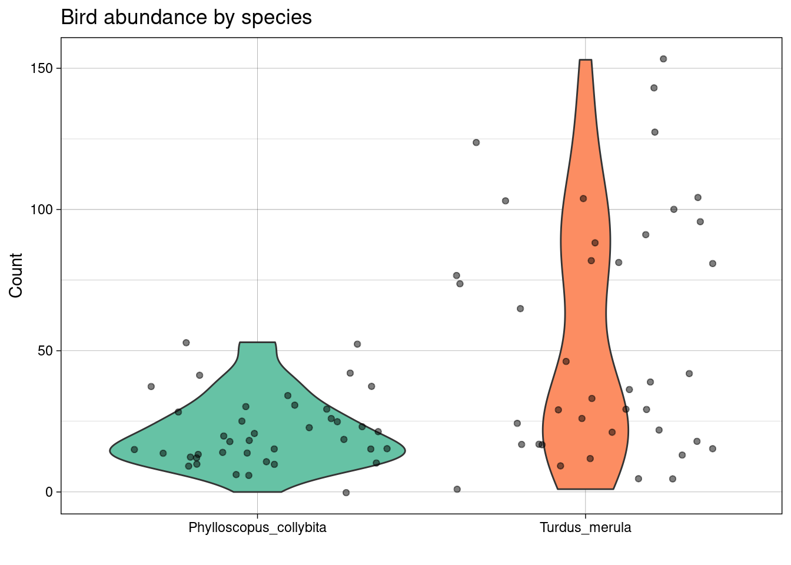
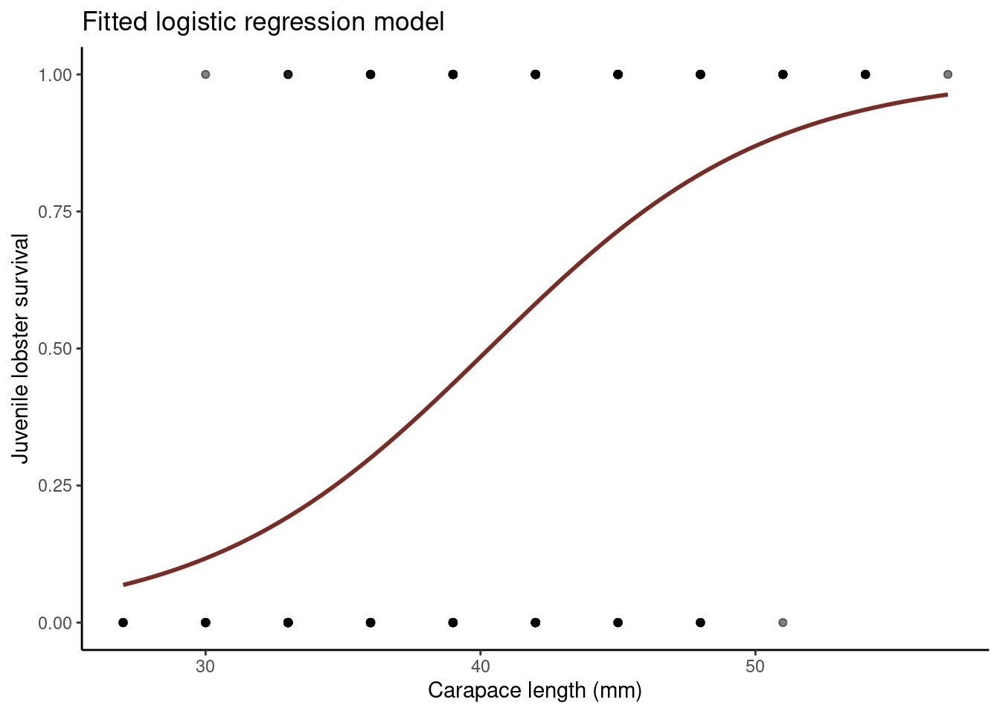
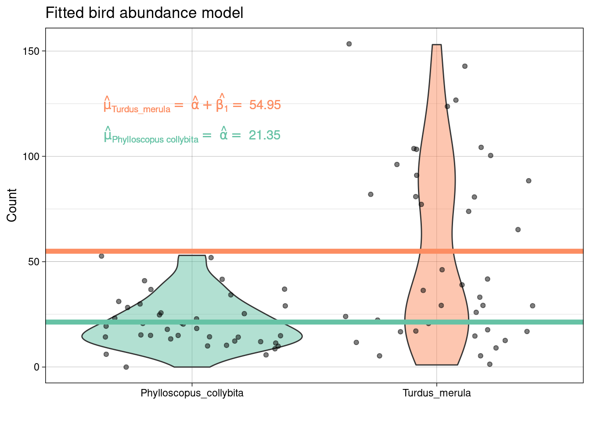

TL;DR
Goals
- See measures of (dis)similarity and distances that help us define clusters.
- Uncover hidden or latent clustering by partitioning the data into tighter sets.
- Divisive methods: nonparametric algorithms such as k-means to split data into a small number of clusters.
- Agglomerative methods: clustering cases and/or variables into a hierarchy of sets - hierarchical clustering.
- Study how to validate clusters through resampling-based bootstrap methods
Clustering algorithms
The distances are used to construct the clusters.
- Agglomerative methods, that build a hierarchical clustering tree
- Partitioning methods that separate the data into subsets
Both types of methods require a choice to be made: the number k of clusters.
- Partitioning methods such as k-means this choice has to be made at the outset whereas for hierarchical clustering this can be deferred to the end of the analysis.
k-means
K-means clustering involves defining clusters so that the overall variation within a cluster (known as total within-cluster variation) is minimized. How do we define this variation? Typically, using Euclidean distances; the total within-cluster variation, is in this case, is defined as the sum of squared distances Euclidean distances between observations and the corresponding cluster centroid.
In summary, this is the procedure
- The number of clusters (k) are specified
- k objects from the dataset are selected at random and set as the initial cluster centers or means
- Each observation is assigned to their closest centroid (based on the Euclidean distance between the object and the centroid)
- For each of the k clusters the cluster centroid is then updated based on calculating the new mean values of all the data points in the cluster
- Repeat the two previous steps until 1) the cluster assignments stop changing or 2) the maximum number of iterations is reached
Hierarchical clustering
Hierarchical clustering is a bottom-up approach: + similar observations and subclasses are assembled iteratively
Linnaeus made nested clusters of organisms according to specific characteristics. The order of the labels does not matter within sibling pairs. + Horizontal distances are usually meaningless + Vertical distances can encode some information.
In summary, this is the procedure
- Start with a matrix of distances, (or similarities) between pairs of observations (cases)
- Choice of distance measure key first step
- Algorithm:
- Initial n singleton clusters
- Scan distance matrix for two closest individuals, group them together
- Compute distance from cluster of size 2 to remaining n-1 singleton clusters
| Method | Pros | Cons |
|---|---|---|
| Single linkage | number of clusters | comblike trees. |
| Complete linkage | compact clusters | one obs. can alter groups |
| Average linkage | similar size and variance | not robust |
| Centroid | robust to outliers | smaller number of clusters |
| Ward | minimising an inertia | clusters small if high variability |
Identify optimal number of clusters
Identifying the appropriate k is important because too many or too few clusters impedes viewing overall trends. Too many clusters can lead to over-fitting (which limits generalizations) while insufficient clusters limits insights into commonality of groups.
There are assorted methodologies to identify the appropriate \(k\). Tests range from blunt visual inspections to robust algorithms. The optimal number of clusters is ultimately a subjective decision.
With ants
Let us again consider ants data:
library(tidyverse)
data <- read_csv("https://raw.githubusercontent.com/STATS-UOA/databunker/master/data/pitfalls.csv")Data were collected on the distribution of ant species at 30 sites across the Auckland region using pitfall traps.
Twenty pitfall traps at each site were left open for ten days and the number of individuals captured counted
Data used here are standardised \(\text{log}(x + 1)\) transformed for the four most abundant species:
+ *Nylanderia spp* + *Pheidole rugosula* + *Tetramorium grassii* + *Pachycondyla sp*
At each location twenty pitfall traps were placed in each of four habitats (Forest, Grass, Urban, Scrub) and left for ten days. At the end of this sampling all individuals in the pitfall traps were identified and summed at each site (location x habitat). This sampling protocol was repeated for 3 months over summer 2011.
## Rows: 30 Columns: 8## ── Column specification ────────────────────────────────────────────────────────
## Delimiter: ","
## chr (3): Location, Habitat, Site
## dbl (5): Month, Nyl, Phe, Tet, Pac##
## ℹ Use `spec()` to retrieve the full column specification for this data.
## ℹ Specify the column types or set `show_col_types = FALSE` to quiet this message.## # A tibble: 30 × 8
## Location Habitat Month Site Nyl Phe Tet Pac
## <chr> <chr> <dbl> <chr> <dbl> <dbl> <dbl> <dbl>
## 1 West Forest 1 WF1 0 0 0 157
## 2 West Grass 1 WG1 0 2 7 37
## 3 West Urban 1 WU1 3 7 0 0
## 4 West Forest 2 WF2 0 0 0 31
## 5 West Grass 2 WG2 5 0 25 0
## 6 West Forest 3 WF3 0 0 0 21
## 7 West Grass 3 WG3 0 3 2 1
## 8 West Urban 3 WU3 0 1 0 0
## 9 Central Forest 1 CF1 0 0 0 1
## 10 Central Grass 1 CG1 0 3 22 2
## # … with 20 more rowsHierarchical clustering
Data are species counts, so we will use Bray Curtis measure:
pitfall.dist <- vegan::vegdist(ants[,5:8], method = "bray", binary = FALSE)
factoextra::fviz_dist(pitfall.dist)
Computing 4 dendrograms
- Single-linkage
single <- ants[,5:8] %>%
vegan::vegdist(., method = "bray", binary = FALSE) %>%
hclust(method = "single")
plot(single, labels = ants$Site)
- Maximum linkage
complete <- ants[,5:8] %>%
vegan::vegdist(., method = "bray", binary = FALSE) %>%
hclust(method = "complete")
plot(complete, labels = ants$Site)
- Average linkage (UPGMA)
average <- ants[,5:8] %>%
vegan::vegdist(., method = "bray", binary = FALSE) %>%
hclust(method = "average")
plot(average, labels = ants$Site)
- Ward’s
ward <- ants[,5:8] %>%
vegan::vegdist(., method = "bray", binary = FALSE) %>%
hclust(method = "ward.D")
plot(ward, labels = ants$Site)
WHAT ARE DENDROGRAMS GOOD FOR? Suggesting clusters for further study…
Using the function cutree() to split into clusters and plot:
##
## Attaching package: 'ape'## The following object is masked from 'package:predictmeans':
##
## varcomppitfall.phylo <- as.phylo(ward)
pitfall.phylo$tip.label <- ants$Site
## Set colours
colours <- c("red","blue","green","black")
plot(pitfall.phylo, cex = 0.6, tip.color = colours[ants$clust4], label.offset = 0.05) 
k-means using the palmerpenguins data
## introducing a new package GGally, please install
## using install.packages("GGally")
library(GGally)## Registered S3 method overwritten by 'GGally':
## method from
## +.gg ggplot2penguins_nafree %>%
select(species, where(is.numeric)) %>%
ggpairs(columns = c("flipper_length_mm", "body_mass_g",
"bill_length_mm", "bill_depth_mm")) 
We see that a lot of these variables (e.g., flipper_length_mm, body_mass_g, and bill_length_mm) are relatively strongly (positively) related to one another. Could they actually be telling us the same information? Combined we could think of these three variables all telling us a little about bigness of penguin. Is there a way we could reduce these three variables, into say 1, to represent the bigness of a penguin. We may not need all the information (variation) captured by these variables, but could get away with fewer new uncorrelated variables that represent basically the same information (e.g., penguin bigness), thereby, reducing the dimensionality of the data (more on this later).
## create a data frame of what we're interested in
df <- penguins_nafree %>%
select(where(is.numeric), -year)We use the kmeans() function.
The first argument of kmeans() should be the dataset you wish to cluster. Below we use data frame df, the penguin data discussed above. But how many clusters do we choose? Let’s try 1 to 5… (i.e., using the centers argument). Setting nstart = 25 means that R will try 25 different random starting assignments and then select the best results corresponding to the one with the lowest within cluster variation.
## set the seed so we all start off in the same place
set.seed(4321)
## one cluster
k1 <- kmeans(df, centers = 1, nstart = 25)
## two clusters
k2 <- kmeans(df, centers = 2, nstart = 25)
## three clusters
k3 <- kmeans(df, centers = 3, nstart = 25)
## four clusters
k4 <- kmeans(df, centers = 4, nstart = 25)
## five clusters
k5 <- kmeans(df, centers = 5, nstart = 25)The kmeans() function returns a list of components:
cluster, integers indicating the cluster to which each observation is allocatedcenters, a matrix of cluster centers/meanstotss, the total sum of squareswithinss, within-cluster sum of squares, one component per clustertot.withinss, total within-cluster sum of squaresbetweenss, between-cluster sum of squaressize, number of observations in each cluster
Choosing the number of clusters
We have an idea there may be 3 clusters, perhaps, but how do we know this is the best fit? Remember it’s a subjective choice and we’ll be looking at a few pointers
Visual inspection method
## Welcome! Want to learn more? See two factoextra-related books at https://goo.gl/ve3WBap1 <- fviz_cluster(k1, data = df)
p2 <- fviz_cluster(k2, data = df)
p3 <- fviz_cluster(k3, data = df)
p4 <- fviz_cluster(k4, data = df)
p5 <- fviz_cluster(k5, data = df)
## for arranging plots
library(patchwork)
(p1| p2| p3)/ (p4 | p5)
Alternatively, you can use standard pairwise scatter plots to illustrate the clusters compared to the original variables.
df %>%
mutate(cluster = k3$cluster,
species = penguins_nafree$species) %>%
ggplot(aes(flipper_length_mm, bill_depth_mm, color = factor(cluster), label = species)) +
geom_text()
Elbow method
Optimal clusters are at the point in which the knee “bends” or in mathematical terms when the marginal total within sum of squares (tot.withinss) for an additional cluster begins to decrease at a linear rate
This is easier to see via a plot:

There is a pretty obvious inflection (elbow) at 2 clusters, but maybe at 3 too. We can rule out an optimal number of clusters above 3 as there is then only a minimal marginal reduction in total within sum of squares. However, the model is ambiguous on whether 2 or 3 clusters is optimal…
Silhouette method
# Silhouette method
fviz_nbclust(df, kmeans, method = "silhouette")+
labs(subtitle = "Silhouette method")Gap method
# Gap statistic
# recommended value: nboot = 500 for your analysis (it will take a while)
set.seed(123) ## remove this
fviz_nbclust(df, kmeans, nstart = 25, method = "gap_stat", nboot = 50)+
labs(subtitle = "Gap statistic method")
Basically it’s up to you to collate all the suggestions and make and informed decision
## Trying all the cluster indecies AHHHHH
library(NbClust)
cluster_30_indexes <- NbClust(data = df, distance = "euclidean", min.nc = 2, max.nc = 9, method = "complete", index ="all")
## *** : The Hubert index is a graphical method of determining the number of clusters.
## In the plot of Hubert index, we seek a significant knee that corresponds to a
## significant increase of the value of the measure i.e the significant peak in Hubert
## index second differences plot.
## 
## *** : The D index is a graphical method of determining the number of clusters.
## In the plot of D index, we seek a significant knee (the significant peak in Dindex
## second differences plot) that corresponds to a significant increase of the value of
## the measure.
##
## *******************************************************************
## * Among all indices:
## * 5 proposed 2 as the best number of clusters
## * 6 proposed 3 as the best number of clusters
## * 1 proposed 4 as the best number of clusters
## * 4 proposed 5 as the best number of clusters
## * 1 proposed 8 as the best number of clusters
## * 3 proposed 9 as the best number of clusters
##
## ***** Conclusion *****
##
## * According to the majority rule, the best number of clusters is 3
##
##
## *******************************************************************fviz_nbclust(cluster_30_indexes) +
theme_minimal() +
labs(title = "Frequency of Optimal Clusters using 30 indexes in NbClust Package")## Among all indices:
## ===================
## * 2 proposed 0 as the best number of clusters
## * 1 proposed 1 as the best number of clusters
## * 5 proposed 2 as the best number of clusters
## * 6 proposed 3 as the best number of clusters
## * 1 proposed 4 as the best number of clusters
## * 4 proposed 5 as the best number of clusters
## * 1 proposed 8 as the best number of clusters
## * 3 proposed 9 as the best number of clusters
## * 3 proposed NA's as the best number of clusters
##
## Conclusion
## =========================
## * According to the majority rule, the best number of clusters is 3 .
Not obvious, basically still undecided between 2 and 3, but according to the absolute majority rule the “best” number is 3